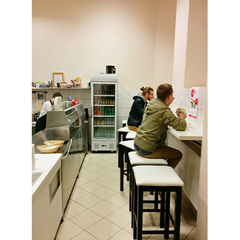
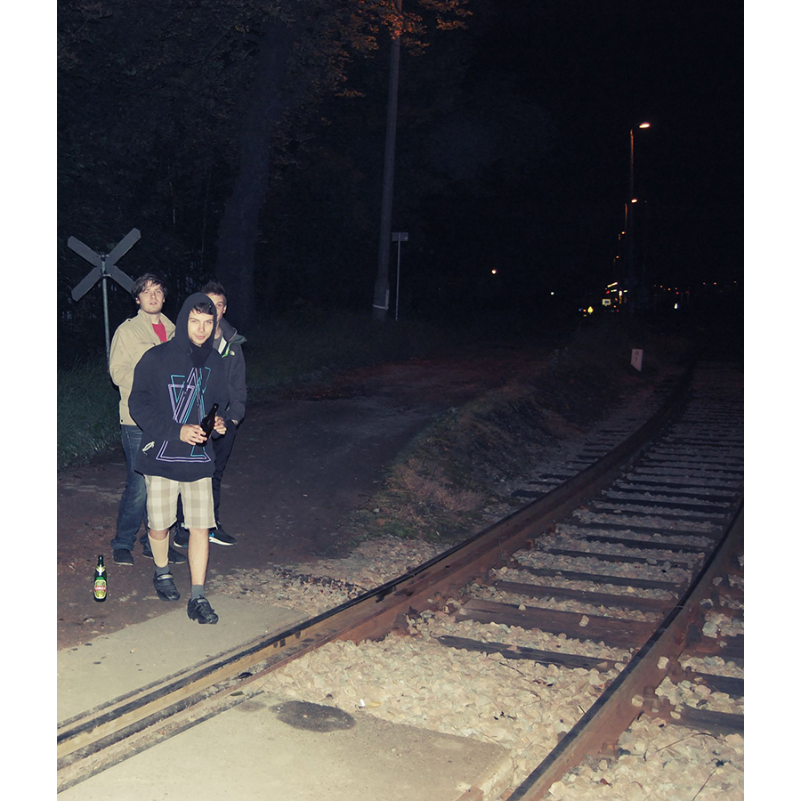
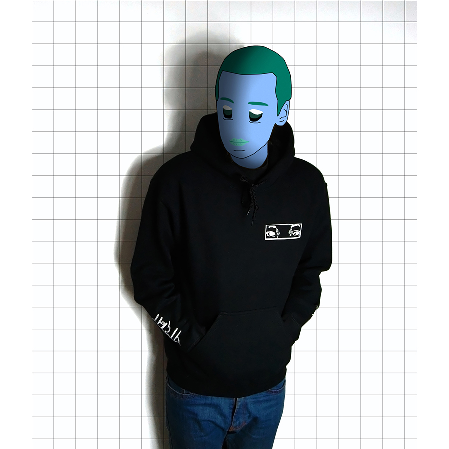

Piotr Kaczmarczyk
Born: 09.07.1992
Nationality: Polish
University of Economics in Katowice graduate, entrepreneur and international commerce specialist. Founder of the Steiner Store and foreign trade freelancer. In love with drumming, music production, fashion and fixed-gear cycling.
Contact
ADDRESS:
E-MAIL:
PHONE:
ul. Władysława Jagiełły 98
43-100 Tychy, Poland
p.kaczmarczyk@steinerstore.pl
+48 535090792
Curriculum Vitae
WORK EXPERIENCE
Steiner Store - Founder & Owner (2013 - Present)
- Managing relations with domestic and foreign clothing brands and distributors
- Conducting trade transactions with domestic and international partners
- International purchases and sales as a subcontractor for GH Yes company
- Administration of the webshop
- Decision making regarding quantity and product selection
- Domestic and international customer service
- Designing promotional graphics
- Managing the process of preparing and shipping orders
- Managing the social media presence on Facebook and Instagram
EDUCATION
University of Economics in Katowice (2011 - 2014)
- Bachelor’s Degree in Economics with major in International Commerce
M.Kopernik High School in Katowice (2008 - 2011)
- Bilingual high school diploma - un baccalauréat bilingue
- Certificate of proficiency in French issued by the French Embassy in Poland
PERSONAL SKILLS
Polish - Native, English - C1, French - B2, German - A2, Russian - A1
Driving licence category B
- Adobe Photoshop
- DxO Optics Pro
- MS Office
- Basic Python, HTML, CSS and jQuery skills
- WordPress
- Adobe InDesign

- 
- 